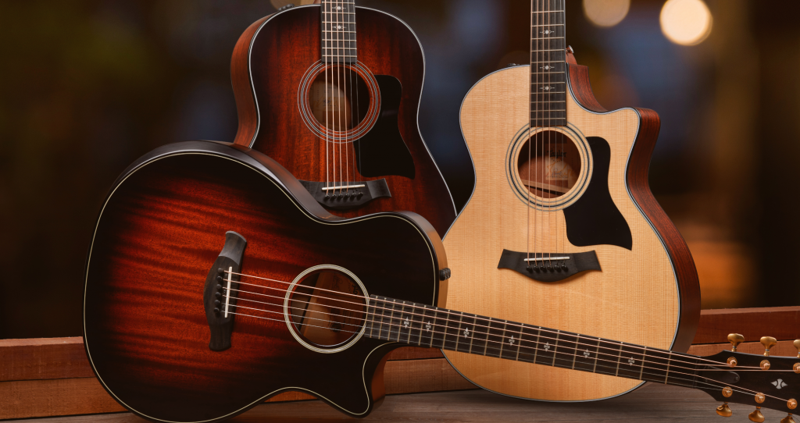

Instrumentos Destacados

Guitarra
Marca: Fender
Modelo: Stratocaster
Precio: $500

Piano
Marca: Yamaha
Modelo: Serie SX
Precio: $99,564
Descubre una amplia variedad de instrumentos para todos los gustos y estilos musicales.
Marca: Fender
Modelo: Stratocaster
Precio: $500
Marca: Yamaha
Modelo: Serie SX
Precio: $99,564
Explora nuestra selección de instrumentos de cuerda, incluyendo guitarras, violines y más.
Descubre instrumentos de viento como flautas, clarinetes y saxofones en nuestra tienda.
Encuentra una variedad de instrumentos de percusión, desde tambores hasta baterías.
Explora teclados electrónicos y pianos digitales para músicos de todos los niveles.